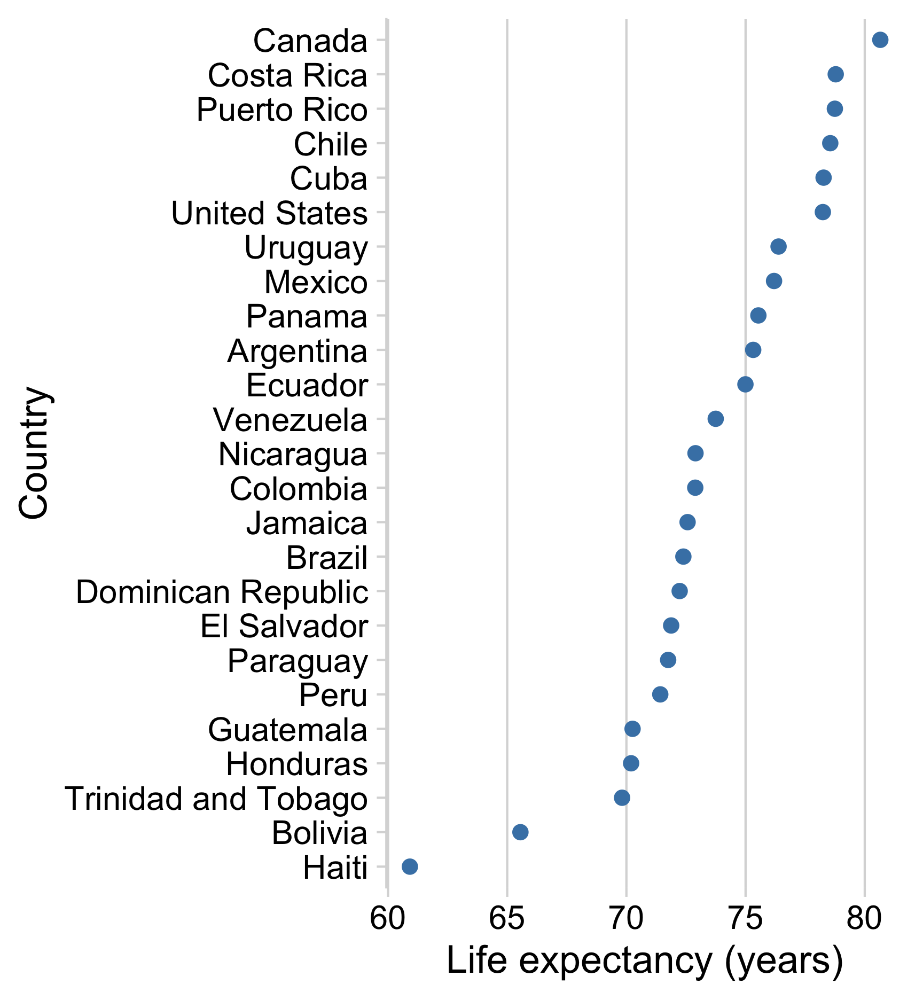
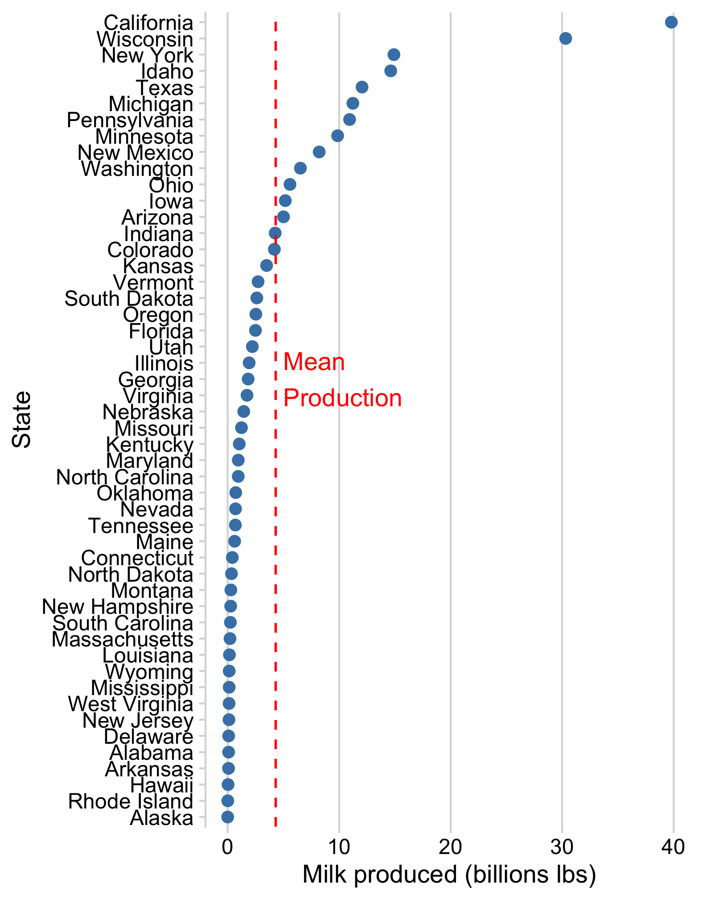
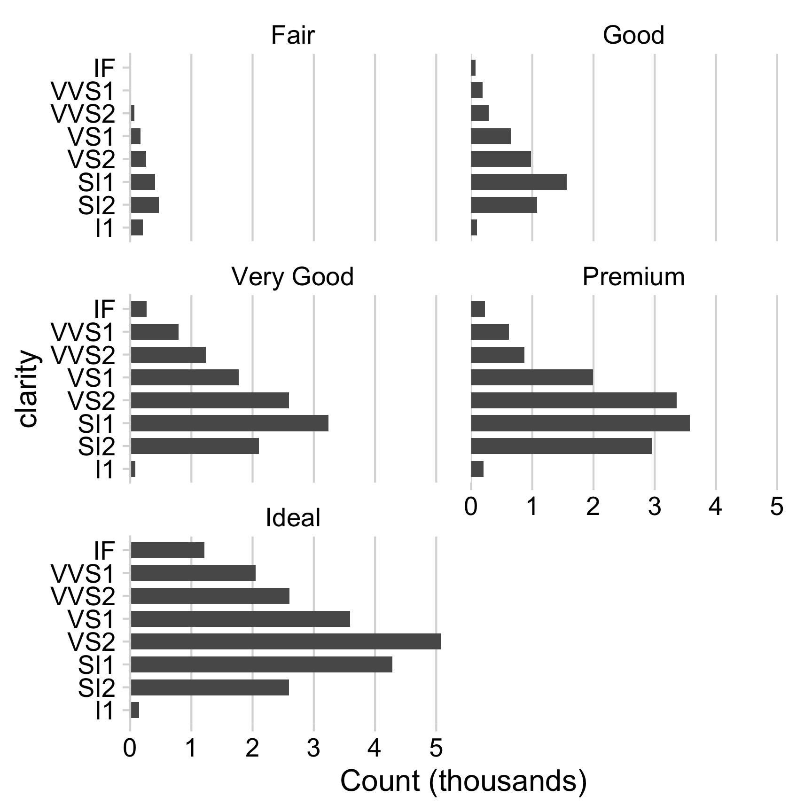
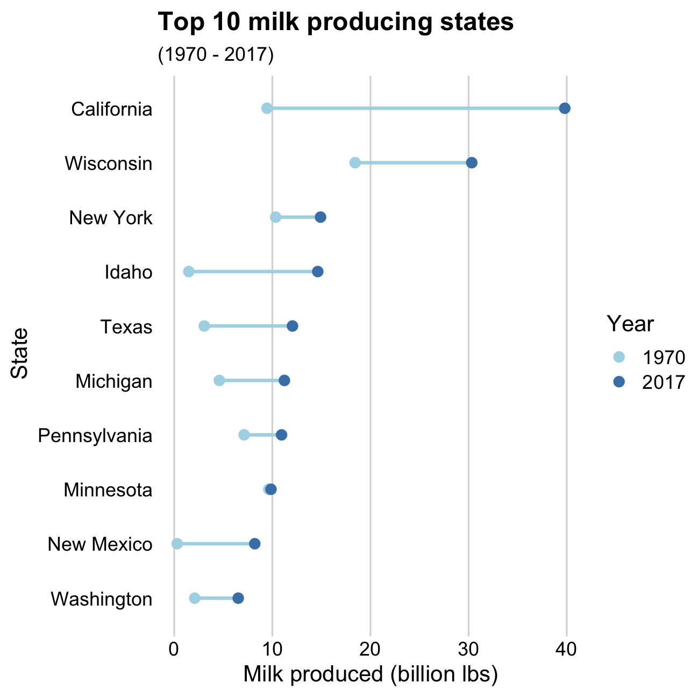
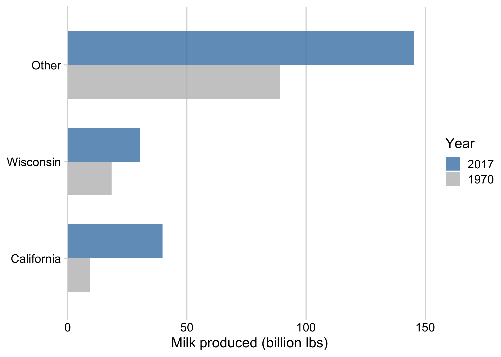
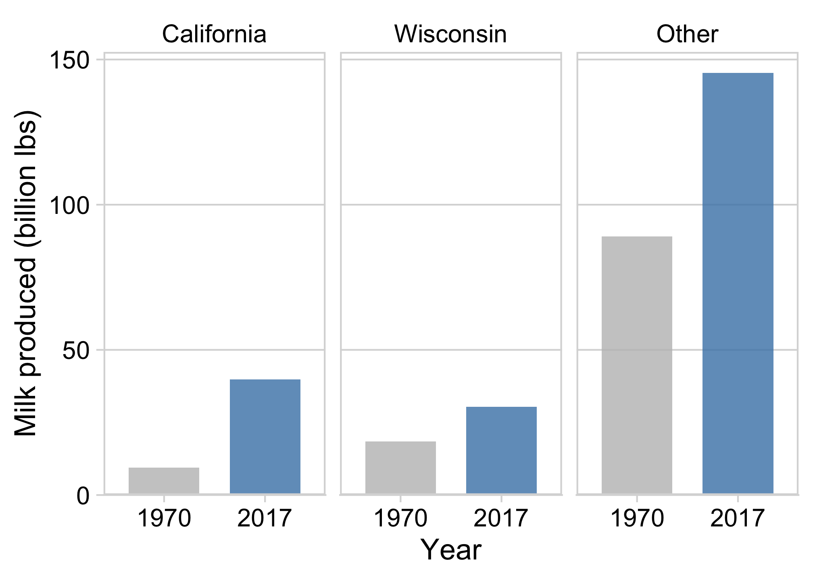
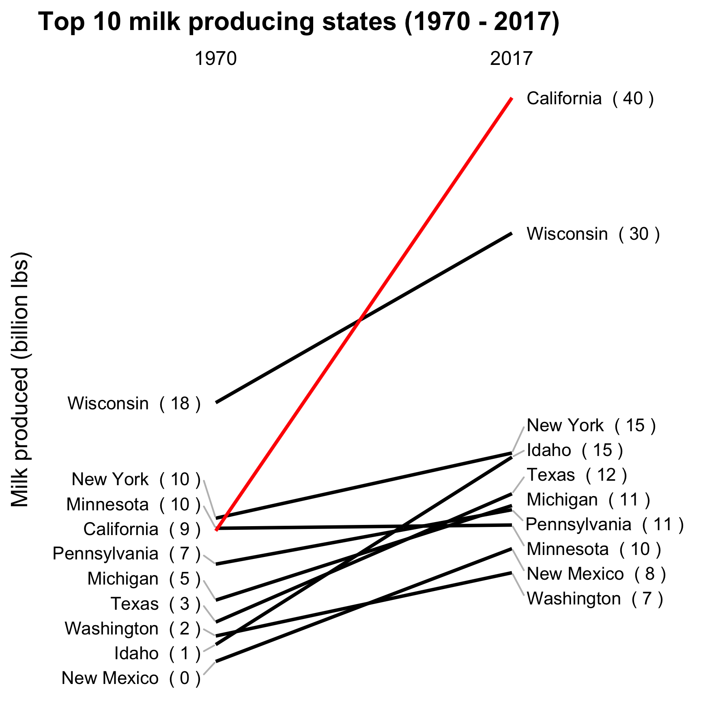
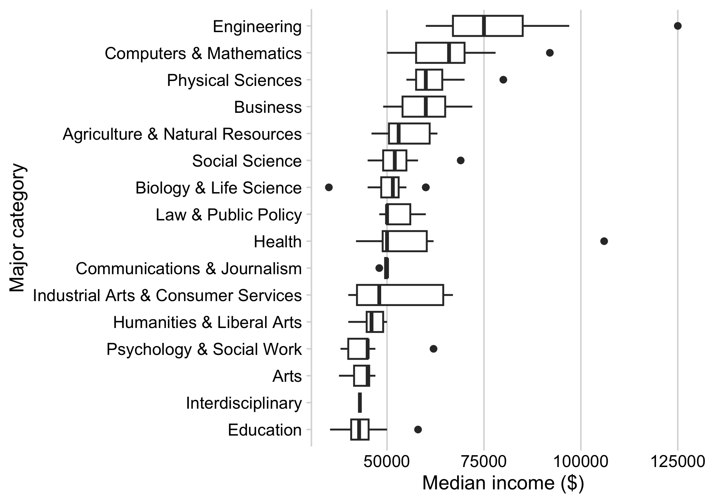
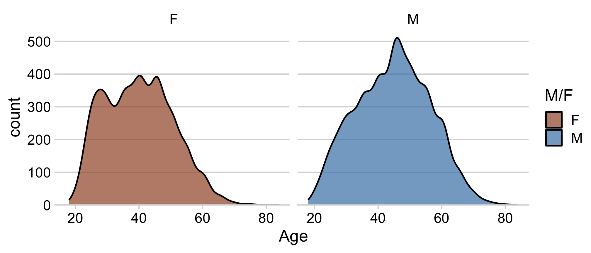

college_all_ages <- read_csv(file.path('data', 'college_all_ages.csv'))
gapminder <- read_csv(file.path('data', 'gapminder.csv'))
marathon <- read_csv(file.path('data', 'marathon.csv'))
milk_production <- read_csv(file.path('data', 'milk_production.csv'))
internet_regions <- read_csv(file.path('data', 'internet_users_region.csv'))
Comparisons
EMSE 4572/6572: Exploratory Data Analysis
John Paul Helveston
October 21, 2026
Use reference lines to add context to chart


How to make zero the reference point

Your turn - comparing to a reference
Make a ranking chart and either a) add a reference line or b) show the ranking as the difference from a reference (e.g. the mean). Use any dataset you want in the “data” folder (examples below using milk_production.csv)


Neither of these charts are great

When comparing across multiple categories, consider:
Parallel coordinates charts

Faceting

When comparing only 2 things,
dodged bars are a good starting point
ggplot(milk_compare) +
geom_col(
aes(x = milk_produced, y = state,
fill = as.factor(year)),
width = 0.7, alpha = 0.8,
position = 'dodge') +
scale_fill_manual(
values = c('grey', 'steelblue'),
guide = guide_legend(reverse = TRUE)) +
scale_x_continuous(
expand = expansion(mult = c(0, 0.05))) +
theme_minimal_vgrid() +
labs(
x = 'Milk produced (billion lbs)',
y = NULL,
fill = 'Year')
Avoid putting >2 categories in legend (if possible)



Or use facets to get rid of the legend!

Strategies for comparing 2 things across more than 2 categories
Dodged bars 😢

Slope chart 😄

Dumbbell charts highlight:
- Compare magnitudes across two periods / groups

Slope charts highlight:
- Change in rankings
- Highlight individual categories
How to make a Dumbbell chart
Adjust the theme and annotate
ggplot(milk_summary_dumbbell,
aes(x = milk_produced, y = state)) +
geom_line(aes(group = state),
color = 'lightblue', size = 1) +
geom_point(aes(color = year), size = 2.5) +
scale_color_manual(
values = c('lightblue', 'steelblue')) +
theme_minimal_vgrid() +
# Remove y axis line and tick marks
theme(
axis.line.y = element_blank(),
axis.ticks.y = element_blank()) +
labs(x = 'Milk produced (billion lbs)',
y = 'State',
color = 'Year',
title = 'Top 10 milk producing states',
subtitle = '(1970 - 2017)')
Good when number of categories is large
Boxplot

Ridgeplot

How to make density facets
You can use facet_wrap(), but
you won’t get the full density overlay

If you want the full density overlay,
you have to hand-make the facets

How to make diverging histograms
Make the histograms by filtering the data
ggplot(marathon, aes(x = Age)) +
# Add histogram for Female runners:
geom_histogram(
data = marathon %>%
filter(`M/F` == 'F'),
aes(fill = `M/F`, y=..count..),
alpha = 0.7, color = 'white') +
# Add negative histogram for Male runners:
geom_histogram(
data = marathon %>%
filter(`M/F` == 'M'),
aes(fill = `M/F`, y=..count..*(-1)),
alpha = 0.7, color = 'white')
How to make diverging histograms
Rotate, adjust colors, theme, annotate
ggplot(marathon, aes(x = Age)) +
# Add histogram for Female runners:
geom_histogram(
data = marathon %>%
filter(`M/F` == 'F'),
aes(fill = `M/F`, y=..count..),
alpha = 0.7, color = 'white') +
# Add negative histogram for Male runners:
geom_histogram(
data = marathon %>%
filter(`M/F` == 'M'),
aes(fill = `M/F`, y=..count..*(-1)),
alpha = 0.7, color = 'white')
scale_fill_manual(
values = c('sienna', 'steelblue')) +
coord_flip() +
theme_minimal_hgrid() +
labs(fill = 'Gender',
y = 'Count')